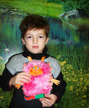

Ребята, вам интересно знать, как я появилась? История моего появления очень интересна я вам сейчас ее расскажу. Садитесь удобнее,приготовьтесь внимательно слушать.
Однажды мальчик Семен остался дома один. Он по-взрослому самостоятельно начал планировать свой день. Когда он пошел в ванную умываться, цвет розового мыла напомнил, что ему снилось что-то розовое и приятное. Семен еще и еще раз взглянул на мыло и начал вспоминать. В этом сне он видел чудо-существо, которое было покрыто гладкой шерсткой розового цвета с головы до ног, глаза этого существа сверкали радостью. И оно все было переполнено лаской, заботой и теплом. Существо даже сказало о том, что оно желает весь мир наполнить добром.
Интересно, что это за существо? – подумал мальчик и приступил выполнять задания, которые ему оставили родители.
Первым делом Семен вышел во двор и накормил своих домашних питомцев - кошку Люсю и собаку Рекса. Затем Семен выпустил Рекса, чтобы он погулял по саду, потом он расчесал его, погладил, ласково потрепал за ухо, так как это всегда делает его папа, и принялся выполнять другие задания. И все время у него из головы не выходило то интересное существо, которое ему приснилось. Семен, поливал цветы из своей маленькой лейки перед домом и думал: Если бы оно меня сейчас видело, оно бы улыбалось. Семен закончил все, что ему наказали родители, и вышел гулять с друзьями. В песочнице он увидел девочку, которая плакала.
Семен подошел к ней и спросил :
- Что случилось? Может быть, я могу чем-нибудь помочь?
Я потеряла в песке свою лопатку - ответила девочка сквозь слезы.
Семен, начал вокруг искать лопатку, и… нашел ее. Лицо девочки сразу же просияло от радости, и она весело поблагодарила мальчика.
- Спасибо, ты хороший! – сказала девочка, и сложив все свои песочные принадлежности отправилась домой.
Семен подумал - «Если бы меня видело это существо, оно бы захлопало в ладоши»
Семен хотел погонять мяч вместе с соседскими мальчишками, и уже побежал к ним на площадку. До площадки оставалось всего два метра, но тут Семен заметил бабушку Клаву, которая жила на другой стороне улицы. Она возвращалась из магазина, и у нее были тяжелые сумки. Семен, тут же забыл про футбол, подбежал к бабушке и уверенно произнес.
- Я помогу Вам донести сумки, баба Клава. Семен, нес одну из сумок, и радостно внутри себя напевал какую-то веселую песенку, о добре. Это были строки, которые он слышал во сне.
- Делам хорошим радуюсь,
Войду я в каждый дом.
И мы с детьми прекрасными,
Наполним мир добром.
Когда Семен проводил бабушку. Он подумал :
-Я еще успею погонять в футбол, пойду- ка я лучше домой. Семен сел за свой стол, и начал рисовать.
Он нарисовал розовым карандашом небольшой овал, потом старательно стал вырисовывать ворсинки, аккуратно накладывая одна на другую, чтоб они выглядели ровными и ласнящимися. Семен рисовал того, о ком думал весь день. Приятное ощущение после сна не покидало его весь день и он решил изобразить того, кто ему приснился. Мальчик начал вырисовывать глаза, вспоминая все свои поступки за день.
«Я покормил Рекса, погулял с ним и приласкал всех домашних питомцев» Семен взял карандаш серебряного цвета и добавил искорку в глаза существа. Глаза сразу же засияли, как будто бы обрадовались, за хороший поступок мальчика. Затем Семен начал вырисовывать губы. Как только он вспомнил, что он не дал засохнуть цветам в саду, как его рука сама повела карандаш вверх и нарисовала радушную улыбку существу, у которого пока еще не было имени. Потом Семен вспомнил девочку с заплаканными глазами, которой он нашел лопатку. И он даже вспомнил о том, что именно в тот момент он подумал: Вот если бы меня видело это существо, оно б от радости захлопало в ладоши. Его рука уже вырисовывала ладоши добродушного существа, и они в радости были сведены вместе. Семену показалось даже, что он слышит радостный смех девочки и чудо-существа и их совместное рукоплескание. Потом Семен вспомнил бабушку Клаву, которая еле - еле успевала за проворными шагами мальчика, и он услышал снова радостную песню, но только ему казалось, что он исполняет ее вместе с этим радужным и симпатичным существом, которое только что он закончил рисовать.
- Делам хорошим радуюсь,
Войду я в каждый дом.
И мы с детьми прекрасными,
Наполним мир добром.
Мальчик за день утомился, но эта усталость была очень приятной. Тем более, вспоминая каждое свое доброе дело за день, он вспоминал добрые глаза, радушную улыбку, задорные и радостные аплодисменты и счастливую песню Чудо-существа. Семен повесил свой рисунок на стену, и уже засыпая, он придумал.
« пусть у этого чудного существа будет имя Хороша, потому что я сегодня делал только хорошие дела, и она всему этому искренне радовалась. Да и песенка ее так и начинается:
- Делам хорошим радуюсь,
Войду я в каждый дом.
И мы с детьми прекрасными,
Наполним мир добром.
Ах, если бы все дети, знали о существовании такой замечательной Хороши! И если бы у каждого была такая игрушка! - родилась мечта у Семена. Интересно, какой она могла бы быть, если бы я не делал хорошие поступки, а наоборот? Наверное, она была бы Плошей?! Но об этом я подумаю завтра –уже засыпая подумал Сема.
Хороша. Вот так вот я и появилась! А когда Семен спал, я ожила. Каждое доброе искренне детское желание имеет волшебную силу. И поэтому по пожеланию Семена, я рождаюсь с каждым малышом, который появляется на свет.
После знакомства с Хорплошей предложьте ребенку заучить песенку. Мотив Вы можете придумать свой.
Объявляем конкурс на лучший мотив для песенки.
Присылайте музыку для этой песенки. Можете прислать ее звуковым файлом, в исполнении с Вашим малышом, или же просто можно прислать ее в нотах. В последнем случае мы запишем Вашу музыку. Ваше творчество мы и выложим на сайте, вместе с вашими фотографиями. Результаты конкурса будут определяться голосованием наших читателей.
1. Красивый светлый малый,
Он появился лишь.
Родилась с ним игрушка,
Чиста, как сам малыш.
Зовут ее Хороша,
Он тепла, мила,
Она всегда напомнит
Про добрые дела.
Припев:
Твори, твори, твори,
Добро сегодня,
Твори, твори, твори
Добро всегда,
Чтобы твоя Хороша,
Красивая была.
2. Растет Хороша вместе
С послушным малышом,
Их добрыми поступками
Стал наполняться дом.
(Появляется Хороша)
Привет! А я Хороша!
Тепла я и мила,
Когда, малыш, творишь ты,
Хорошие дела.
Припев:
3. Живу с тобой я рядом,
Я в каждой из квартир.
Мы добрыми поступками
Наполним с тобой мир.
Но только малыш, помни,
Меня не огорчай!
И из Хороши в Плошу,
Меня не превращай!
Назад